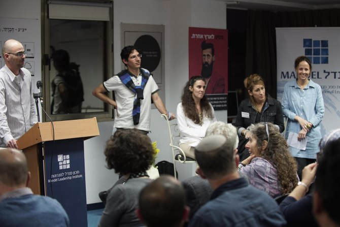

In response to a request from the Ministry of Education and the Oranim Academic College of Education, the 19 fellows of Cohort 24 of the Mandel School for Educational Leadership spent three weeks of intensive study examining teacher training colleges and the process of teacher training in Israel. This field has undergone many changes in recent years, in particular following the decision to transfer responsibility for funding teacher training colleges to the Planning and Budgeting Committee of Israel’s Council for Higher Education, and the decision to establish a new commission to reexamine the guidelines recommended by the Ariav Commission of 2006. These two decisions provided an opportunity to consider how colleges of education can help improve education in Israel. At the request of Professor Yaara Bar-On, president of the Oranim Academic College of Education, Oranim College was chosen as a test case, which would enable examination of processes within the college, as well as their interactions with other, external bodies in the field.
Over the course of the exercise, the fellows developed a broad understanding of the field of teacher training, focusing on the academic colleges of education. They examined different approaches to teacher training, reviewed training models in Israel and abroad, analyzed the development of teacher training in Israel, and explored some of the field’s main issues – differences in professional approaches, professional identity, and developing an educational vision.

On March 26, 2017, the fellows presented the main elements of the findings of the exercise at an event held at the Mandel School for Educational Leadership in Jerusalem. Their presentation put forward three main recommendations for action, all based on the concept that Israel’s colleges of education are the bodies entrusted with strengthening teaching as a profession.
The first recommendation, directed mainly toward the colleges themselves, is that there should be a greater emphasis on identity development for teachers. The second recommendation is directed at decision makers in the Council for Higher Education and the Ministry of Education, and calls for strengthening the connections between the different bodies involved in teacher training, by developing mechanisms to encourage mergers and partnerships. The third recommendation is that the Council for Higher Education should become more involved in the process of merging colleges and should provide a body of experts to support this process.
After the fellows presented their findings, responses were heard from three key figures involved in teacher training in Israel:
Mr. Noah Greenfeld, director of the department for teacher training at the Ministry of Education;
Dr. Rivka Wadmany of the Kibbutzim College, who is a member of the Council for Higher Education and its Planning and Budgeting Committee; and
Professor Yaara Bar-On, president of the Oranim Academic College of Education. The respondents were asked what they see as the best and worst possible scenarios once the education colleges fall under the auspices of the Planning and Budgeting Committee.
“In my idea of paradise, the colleges of education would do what they know how to do best: provide teacher training in particular disciplines for a bachelor’s degree, with an option to proceed to a master’s degree, but not immediately, so that students can gain insights from their experiences in the field before they continue studying,” said
Professor Bar-On. “Over the four years of training, the students would complete a teaching certificate in the best possible way, with a great deal of field work,” she continued. “After those four years, they will have a strong educational backbone.”
Dr. Rivka Wadmany envisioned a future scenario in which colleges would merge, with fewer and stronger colleges as a result: “These colleges are happy with the mergers. They believe that combining forces and coming under the responsibility of the Planning and Budgeting Committee has made them stronger academically, administratively, and financially, has raised the status of the teaching profession, and has made the colleges into an educational powerhouse that trains teachers in best way possible,” she said.
Noah Greenfeld described the ideal scenario from his perspective: “We have left behind the B.Ed., which included academic study alongside professional training. That combination created a lot of tension. First there needs to be training in a specific discipline, and only then full professional training, with a full amount of time, with no tension, and with an enormous amount of investment,” he said.
Danny Bar Giora, the director of the Mandel School for Educational Leadership, praised the report of the findings of the group exercise that was produced by the fellows: “Your decision to examine the education colleges by analyzing the perspectives of management, structure, and change, as well as exploring questions of educational identity and the role of the teacher as educator, combined with the way you linked vision and practice, shows that you are educational professionals who are committed to education,” he told the fellows. “This connection between the identity of the educator and questions of structure and process encapsulates almost the entire Mandel philosophy in a single stroke.”
Moshe Vigdor, director general of the Mandel Foundation–Israel and a former director general of Israel’s Council for Higher Education, described some important milestones in the process of change undergone by Israel’s teacher training colleges, and congratulated the fellows on the exercise and the document that they produced: “The fellows showed a remarkable ability to cut through the complexities of the system in a short period of time and under great pressure, and illuminated the fundamental issues involved.”
The annual group exercise of the Mandel School for Educational Leadership is an opportunity for fellows to help find solutions for a particular problem facing Israel’s education system. The exercise is an expression of the School’s core concept that leading meaningful change requires walking a tightrope between the worlds of theory and practice.
Read the Summary of Findings and Recommendations (Hebrew)​
{kind=link}
{kind=link}